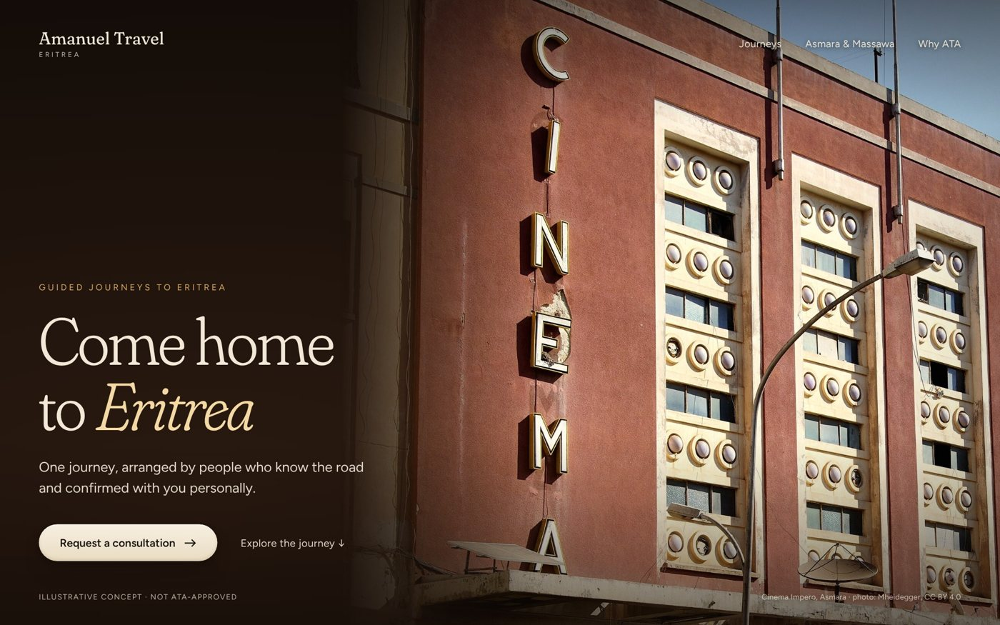
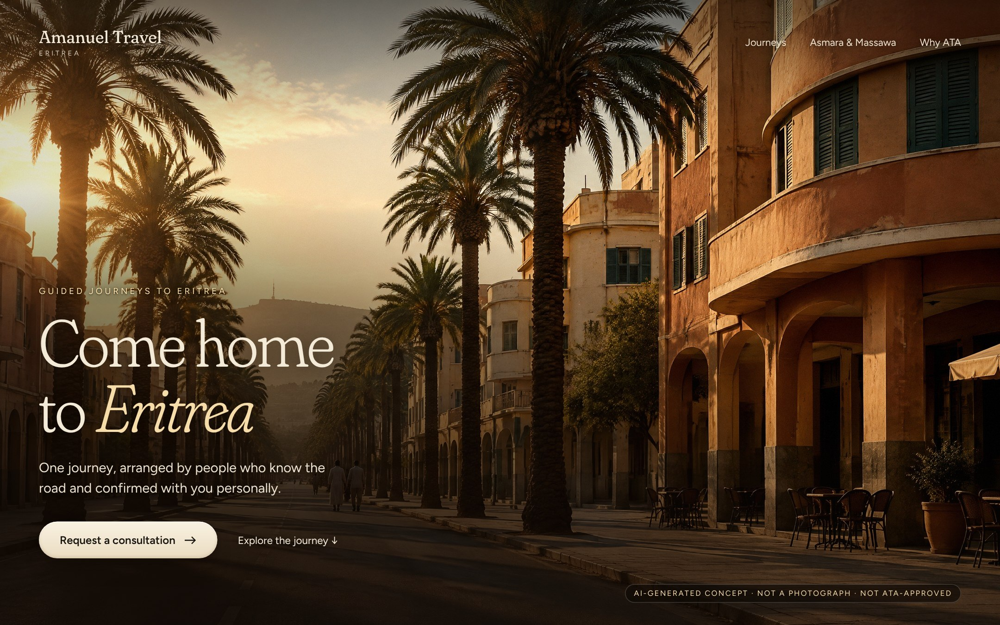
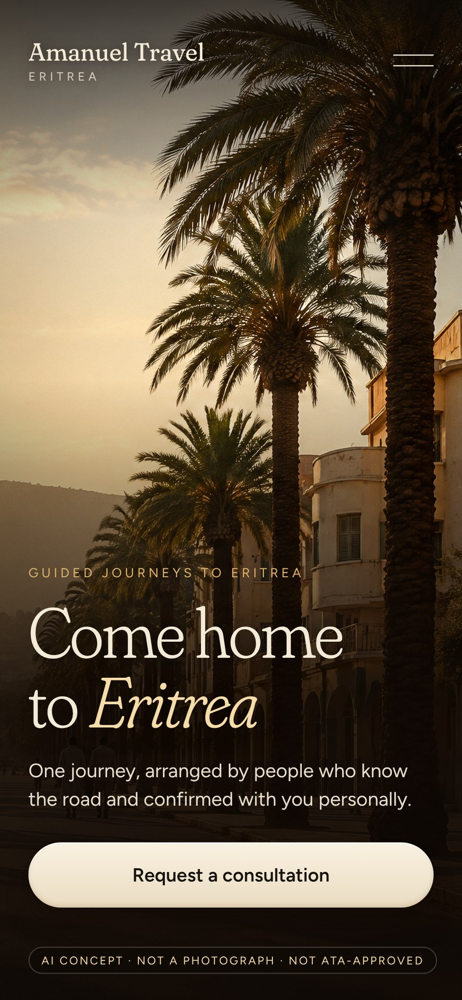
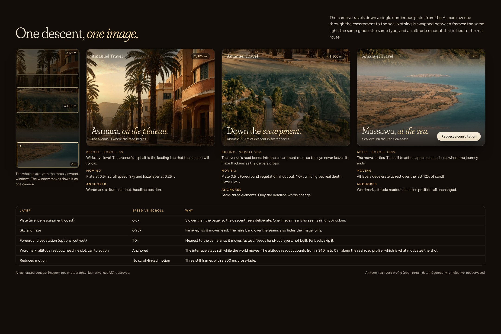
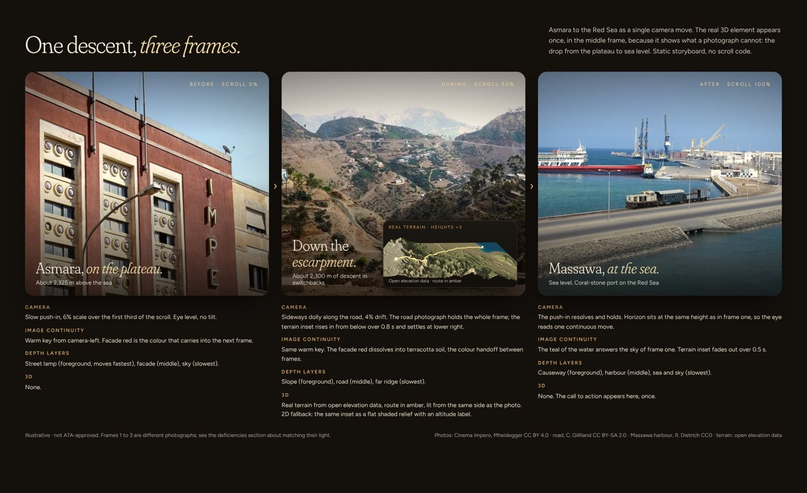
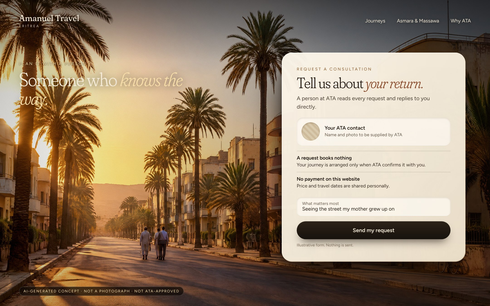
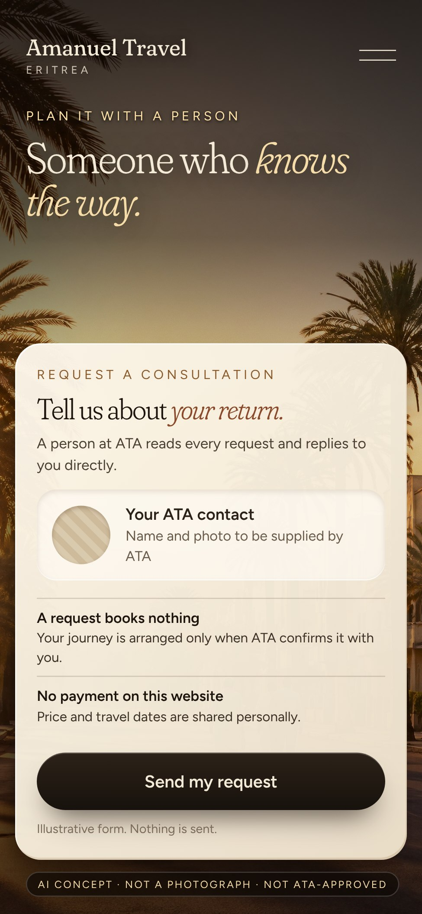

ATA · Eritrea tourism · issue #24
This replaces the V1 sheet at the link you were given. The old link still shows V1 and was not changed. The hero, the storyboard and the enquiry scene are new, and the biggest change is disclosed first: the imagery is now AI-generated concept art, clearly labelled, because I have no rights-clear premium photography. It shows the direction; it is not documentary evidence of Eritrea and must not be presented as such.


What changed: a single emotional scene (palm avenue, curved ochre buildings, low sun, two small figures, a calm sky for type) replaces a flat midday facade. The type now sits over a lit, darkened field of the picture itself instead of a separate dark panel. What did not: it is still not a photograph.
Desktop 1440 px. Focal path: sun glow, then headline, then the two walkers, then the button. One action and one quiet link.

Mobile 390 px. A different crop (the tall palms and the curved corner) with the headline and a thumb-width button in a dark lower third.

V1 problem: three different photographs. V2 answer: one continuous plate, so the avenue's road becomes the escarpment road and ends at the sea, in one light and one grade. The table states what moves (plate 0.6×, haze 0.25×, optional foreground 1.0×) and what stays anchored (wordmark, altitude readout, headline slot, call to action). The altitude readout is what motivates the shot: it counts down along the real road profile.

V1 storyboard, for comparison.

Desktop 1440 px. The card is lit from the same low sun and casts a three-layer shadow that falls away from it. A labelled placeholder holds the ATA contact: no invented person.

Mobile 390 px. The headline moves to the sky, the card fills the lower two thirds, and there is one field fewer.
| Area | Rule |
|---|---|
| Light | One low, warm key from camera-left in every frame and on every interface surface. Shadows fall away from it. No pure black. |
| Grade | One script for every image: gentle S-curve, warm highlights, teal-brown shadows, about 10% less saturation, vignette, fine grain. |
| Type | Fraunces light, with italic for the one emotional word, and Figtree for interface text. Headlines sit on a darkened, lit part of the picture, never across busy detail. |
| Surfaces | Warm paper cards with a 1 px inner highlight, recessed fields, and a layered contact shadow cast away from the sun. |
| Crops | One scene per frame. Desktop 16:10, mobile 4:9 cut from the same picture but composed separately. Subject on a third. |
| Mobile | Headline in the lower dark third or in clear sky, one full-width button, no navigation clutter. |
| Element | Serves | Integration | 2D fallback | Verdict |
|---|---|---|---|---|
| Lit paper card (frame C) | Makes the enquiry feel tangible and calm | Same key light, layered cast shadow, inner highlight, recessed fields | Flat card with a hairline border | Shown |
| Depth within the plate (frame B) | The descent feels like a camera move | Parallax by layer speed inside one picture, so light always matches | Plain slow pan, or three stills with a 300 ms cross-fade | Specified, not built |
| Real terrain relief | Shows the drop in elevation | Was in V1 as an inset | Altitude readout | Dropped, the plate and readout do this job |
| Rotating landmarks, floating objects | None | Did not integrate | None | Removed in V1, stays removed |
This is a deliberate limit: a convincing, lit soft-realism treatment of real 3D geometry would need rendered assets matched to one photograph's lighting, and I did not reach that standard here. I show it as surface lighting and layered depth only, and say so rather than overclaim.
| Asset | Source | Status |
|---|---|---|
| Hero, descent plate and enquiry backdrop | AI-generated with Higgsfield (Cinema Studio 2.5 and GPT Image 2.5), from text prompts I wrote. No photograph was used as input. | Concept art only. Not documentary. Shows an imagined Asmara-style avenue and an imagined escarpment; the places are not reproductions of real locations. Check the provider's commercial terms before any use. |
| Altitude readout values | Open terrain data (Terrain Tiles on AWS, including SRTM) along the OpenStreetMap road | Open licences, attribution on any public use. Values can differ from quoted figures by tens of metres. |
| V1 comparison images | Wikimedia Commons (CC BY, CC BY-SA, CC0) | Shown only for comparison, credited in the V1 sheet. |
| Not used | EOX satellite tiles, Google Earth, owner-supplied photographs | Excluded, as instructed. |
Everything shown is illustrative and not approved by ATA. Words such as "arranged by people who know the road" need ATA's confirmation. No price, date, duration, capacity or availability appears.
Not a finished website, not an approval, and not launch-ready. PR #25 and production are untouched.